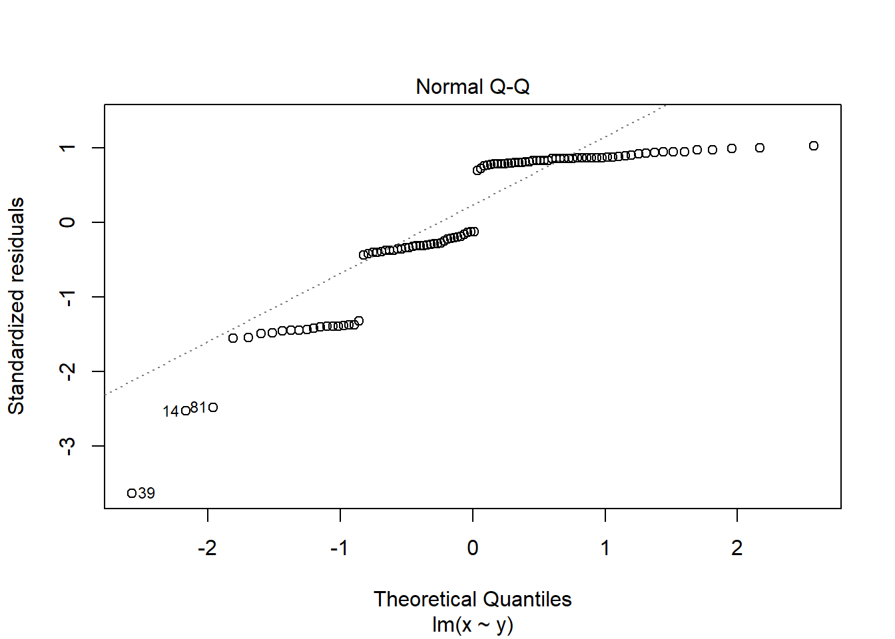

Chapter 5 What are General Linear Models
5.1 Overview
A linear model describes a continuous response variable as a function of one or more explanatory variables. When you have a single explanatory variable, that model is:
\[\begin{equation} E(y_{i})=\beta_{0}+\beta_{1}X1_{i} \tag{5.1} \end{equation}\]
Where:
- \(y\) is the response variable and \(X1\) is the explanatory variable.
- \(i\) is the index so \(X1_{i}\) is the \(i\)th value of \(X1\)
- \(E(y_{i})\) is the expected value of \(y\) for the \(i\)th value of \(X1\).
- \(\beta_{0}\) and \(\beta_{1}\) are the coefficients in the model. In a single linear regression, \(\beta_{0}\) is often called the intercept and \(\beta_{1}\) the slope.
The equation (5.1) allows the response, \(y\) to be predicted for a given value of the explanatory variable. Let’s unpack what we mean by \(E(y_{i})\). If you measure the response for a particular value of \(x\) very many times there would be some distribution of those responses. In the general linear model that distribution is assumed to be normal. Its mean is \(E(y_{i})\). Another way of saying that is that in a general linear model, we model the mean of the response. That the measured response is drawn from normal distribution with a mean of \(E(y_{i})\) is a defining feature of the general linear model. An additional assumption is that those normal distributions have the same variance for all the \(x\) values
5.2 Model fitting
The process of estimating the model coefficients from your data (set of chosen \(X1\) with their measured \(y\) values) is known as fitting a linear model. The coefficients are also known as parameters.
The measured response values in your data, \(y_{i}\), will differ from the predicted values, \(\hat{y}\), randomly and these random differences are known as residuals or errors. Our parameter values are chosen to minimise the sum of the squared residuals and is known as least-squares estimation. A very commonly used abbreviation for the sum of the squared residuals (or errors) is \(SSE\).
\[\begin{equation} SSE = \sum(y_{i}-\hat{y})^2 \tag{5.2} \end{equation}\]
The role played by \(SSE\) in estimating our parameters means that it is also used in determining how well our model fits our data. Our model can be considered useful if its predictions are close to the observed data and the smaller the value of \(SSE\), the better the fit. In other words, there is little random variance left over in the response. As the absolute value of \(SSE\) will depend on the size of the \(y\) values and the sample size, we express it as a proportion or the total variation in \(y\), \(SST\) and proportion of variance left over is
\[\begin{equation} SSE / SST \tag{5.3} \end{equation}\]
The proportion of variance explained by the model is a very commonly used metric of model fit and you have probably heard of it - \(R^2\)
\[\begin{equation} R^2=1-\frac{SSE}{SST} \tag{5.3} \end{equation}\]
If there were no explanatory variables, the value we would predict for the response variable is its mean. Thus a good model should fit the response better than the mean. The output of lm() includes a measure of fit called R-squared which is the proportion of variance explained by the model relative to the total variance of the response. This is the proportional improvement in the predictions from the regression model relative to the mean model. It ranges from zero, the model is no better than the mean, to 1, the predictions are perfect. See Figure 5.1.

Figure 5.1: A linear model with different fits. A) the model is a poor fit - the explanatory variable is no better than the response mean for predicting the response. B) the model is good fit - the explanatory variable explains a high proportion of the variance in the response. C) the model is a perfect fit - the response can be predicted perfectly from the explanatory variable. Measured response values are in pink and the predictions are in green.
Adjusted \(R^\) penalises….
Since the distribution of the responses for a given \(x\) is assumed to be normal and variances of those distributions are assumed to be homogeneous, these are also true of the residuals and it is our examination of the residuals which allows us to evaluate whether the assumptions are met.
See Figure 5.2 for a graphical representation of linear modelling terms introduced so far. We will reference this figure in later chapters.

Figure 5.2: A general linear model annotated with the terms used in modelling. The measured response values are in pink, the predictions are in green, and the differences between these, known as the residuals, are in blue. The estimated model parameters, \(\beta_{0}\) (the intercept) and \(\beta_{1}\) (the slope) are indicated.
5.3 More than one explanatory variable
When you have more than one explanatory variable these are given as \(X2\), \(X3\) and so on up to the \(p\)th explanatory variable. Each explanatory variable has its own \(\beta\) coefficient.
The general form of the model is: \[\begin{equation} E(y_{i})=\beta_{0}+\beta_{1}X1_{i}+\beta_{2}X2_{i}+...+\beta_{p}Xp_{i} \tag{5.4} \end{equation}\]
The model has only one intercept which is the value of the response when all the explanatory variables are zero.
5.4 General linear models in R
5.4.1 Building and viewing
T-tests and ANOVA, like regression, can be carried out with the lm() function in R. It uses the same method for specifying the model. When you have one explanatory variable the command is:
lm(data = dataframe, response ~ explanatory)
The response ~ explanatory part is known as the model formula.
When you have two explanatory variable we add the second explanatory variable to the formula using a + or a *. The command is:
lm(data = dataframe, response ~ explanatory1 + explanatory2)
or
lm(data = dataframe, response ~ explanatory1 * explanatory2)
A model with explanatory1 + explanatory2 considers the effects of the two variables independently. A model with explanatory1 + explanatory2 considers the effects of the two variables and any interaction between them.
We usually assign the output of lm() commands to an object and view it with summary(). The typical workflow would be:
mod <- lm(data = dataframe, response ~ explanatory)
summary(mod)
There are two sorts of statistical tests in the output of summary(mod): tests of whether each coefficient is significantly different from zero; and an F-test of the model overall.
The F-test in the last line of the output indicates whether the relationship modelled between the response and the set of explanatory variables is statistically significant.
lm() can be used to perform tests using the General Linear Model including t-tests, ANOVA and regression for response variables which are normally distributed.
Elements of the lm() object include the estimated coefficients, the predicted values and the residuals can be accessed with mod$coeffients, mod$fitted.values and mod$residuals respectively.
5.4.2 Getting predictions
mod$fitted.values gives the predicted values for the explanatory variable values actually used in the experiment, i.e., there is a prediction for each row of data. To get predictions for a different set of values make a dataframe of the different set of values and use the predict() function.. The typical workflow would be:
predict_for <- data.frame(explanatory = values)
predict_for$pred <- predict(mod, newdata = predict_for)
5.4.3 Checking assumptions
The assumptions of the model are checked using the plot() function which produces diagnostic plots to explore the distribution of the residuals. They are not proof of the assumptions being met but allow us to quickly determine if the assumptions are plausible, and if not, how the assumptions are violated and what data points contribute to the violation.
The two plots which are most useful are the “Q-Q” plot (plot 2) and the “Residuals vs Fitted” plot (plot 1). These are given as values to the which argument of plot().
The Q-Q plot is a scatterplot of the residuals (standardised to a mean of zero and a standard deviation of 1) against what is expected if the residuals are normally distributed.

The points should fall roughly on the line if the residuals are normally distributed.
The following are two examples in which the residuals are not normally distributed.


The Residuals vs Fitted plot shows if residuals have homogeneous variance or have non-linear patterns. Non-linear relationship between explanatory variables and the response will usually show in this plot if the model does not capture the non-linear relationship. For the assumptions to be met, the residuals should be equally spread around a horizontal line:

The following are two examples in which the residuals do not have homogeneous variance and display non-linear patterns.

5.5 Reporting
to add figure: data + model summarise but in a way that is ‘honest’ direction and magnitude of effects, significance, stats result.